Professional History
The professional journey of Mustafa (Vic) Uzumeri.
This is a record of projects and ideas across five decades — from modeling travel demand for Toronto in 1974 to building AI marketplace systems today. The thread connecting them is a persistent interest in how complex systems actually work: transportation networks, factories, classrooms, supply chains, and markets.
Each phase built on the last. Transportation planning led to operations research. Operations research led to teaching. Teaching led to eLearning production. eLearning production led to video and surveillance systems. And all of it converged into thin market theory and the DeeperPoint framework.
Vic also writes independently on Substack.
The Professional Journey Behind the Insight
2025 DeeperPoint AI Matching

The initiative for selling prairie grains morphed into a focus on developing an AI-enhanced system to match remote and arms-length business interests. A system like this might consummate the deal, but it could plausibly help the parties to speed through the mating dance to decide if they want to finish up offline.
2022 Canadian Grain Plaza
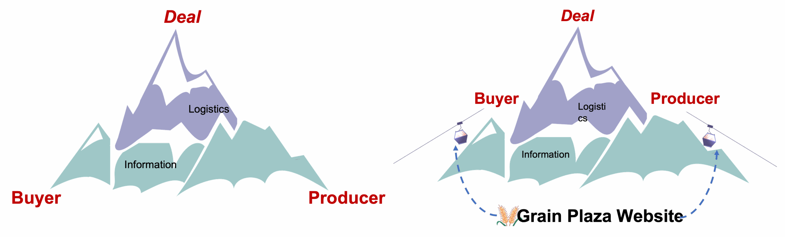
Canadian prairie grain producers have been exporting their crops around the world for many decades. However, the system is still focused on selling and shipping bulk quantities. Even though Canada grows some of the highest quality grains in the world, Canadian farmers often get the commodity price rather than the premium price that their crops deserve. I am working with a long-time colleague on an idea to change that.
2022–2024 Supply Chain Data Standards
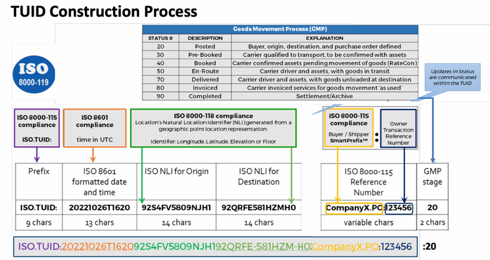
In the aftermath of the Pandemic, global supply chain stakeholders have been doing a deep re-evaluation of SC structure, performance and transparency. I have since joined working groups for ISO 8000-119 and ASTM F49.01. The former has proposed a format for a global Transport Unit ID (TUID) that can uniquely identify any shipment, anywhere in the world. Even better, the 8000-119 TUID can be self-generated by the parties to the shipment.
2021 Transport Unit Identifier (TUID)
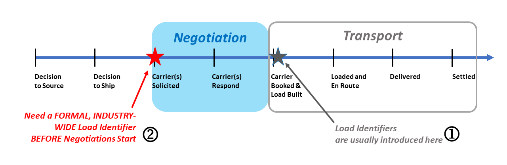
My previous investigations into the problem of trucking “phantom data” led to a proposal for an industry-standard Transport Unit ID (TUID). As a conversation starter, I proposed a simple method by which any shipper could create an ID that was extremely unlikely to conflict with those created by other shippers. The TUID idea, in turn, has led to many interesting possibilities to improve cooperation and interoperability among trucking industry stakeholders.
2020 Phantom Data in Trucking
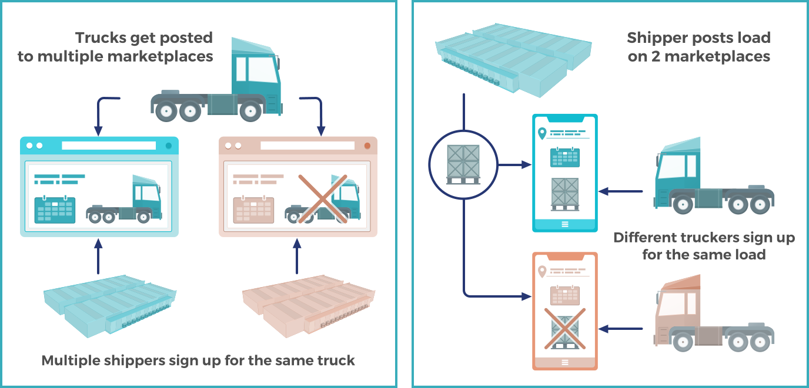
I resumed work with Michael Darden and DFM Data Corp in a supportive role. DFMDC is tackling a hugely important problem that is beginning to surface in the US trucking spot market. The spot market arranges 500,000 to 1.5 million truck loads per day. My investigation resulted in two findings: a) the problem is real and big, and b) the way the DFM industry works, it is really hard to fix unless we can institute a reliable ID on planned truckloads before they enter the negotiation and bidding system.
2019 Stacks HOA
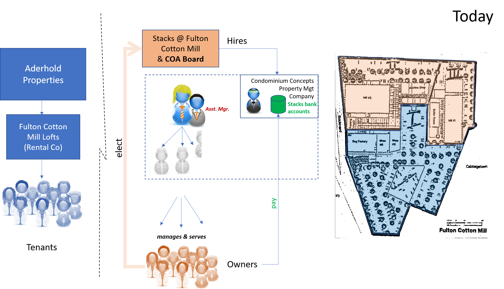
I served as president of the Stacks Home Owner’s Association. I lasted 13 months … one month longer than the previous record-holder.
2018 IoT and Factory Video
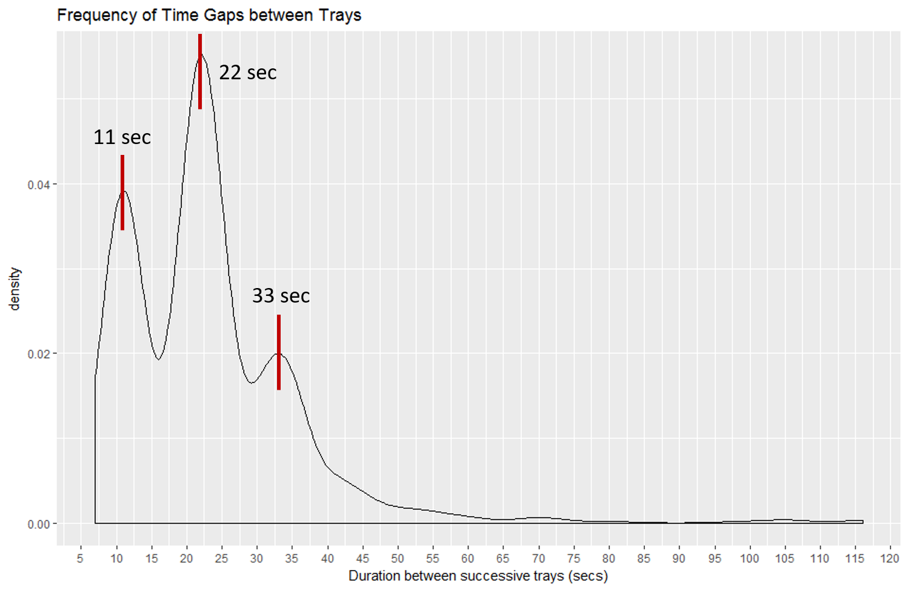
I worked with a local industrial bakery to integrate IoT sensors into their suite of surveillance video. The idea was to recognize machine events from the factory floor and use that data to make it easier to find relevant video on the surveillance system. The project petered out for reasons unrelated to the technology … but I was able to assemble an effective proof of concept before things wound down.
2017 Factory Surveillance System
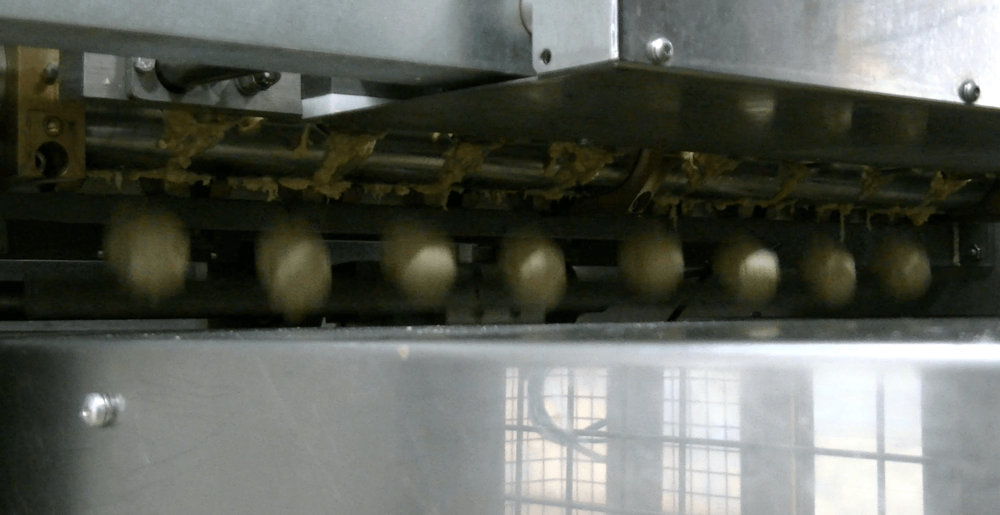
A friend owns an industrial bakery. I talked him into installing some surveillance cameras and a decently capable video management system to observe operations … particularly in his production machinery. A lot of weird things can happen with waffle and pretzel dough and there isn’t always a person nearby to see it.
2016 Event Mapping Utility
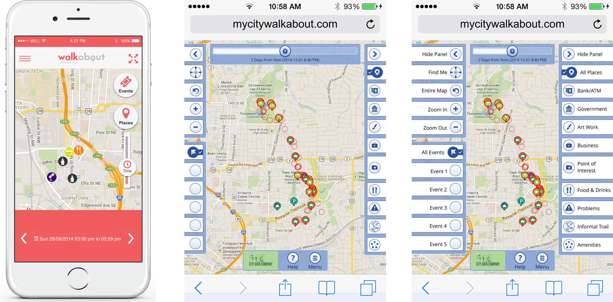
For about a year, I wrangled the team of developers (in Algeria and Mexico) to create a flexible event mapping utility. It was totally responsive so it ran on desktops and mobile. It also fed anonymous data back to a database where we could build maps of visitor behavior.
2015 Using Video to Teach Soft Skills
I developed sales training courses for a global multinational tech company. There were a lot of courses, so they must have been happy. The key to my design was to use video to explain complex situations that text and graphics could not capture.
2014 Software Sales Training (Siemens PLM)
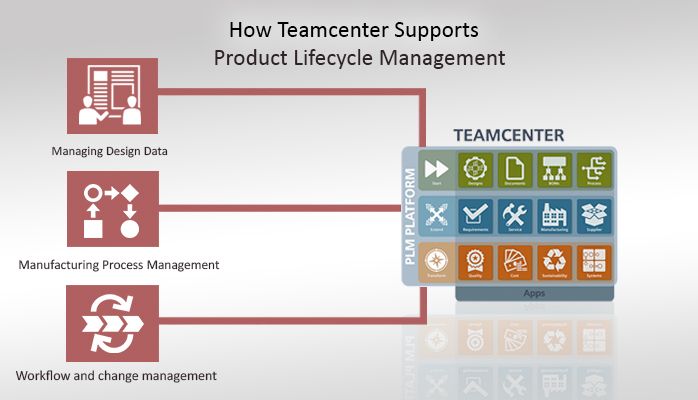
I constructed seven detailed courses to train Siemens PLM sales personnel around the world. The courses covered sales techniques, product knowledge and corporate sales management. I also arranged to have them translated into 4 other languages.
2013 Video for Operations Analysis
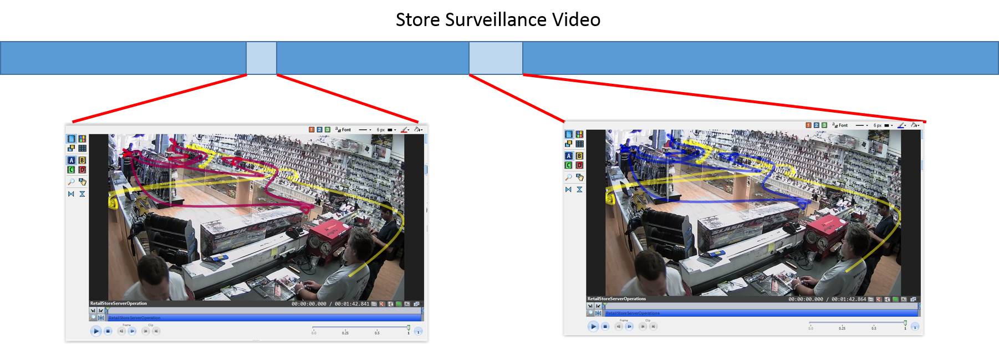
I worked with an industrial bakery, Dartfish and Michael Darden to explore a variety of ways to use video to capture raw data for operations analysis. This didn’t really lead to any dramatic opportunities, but it offered tremendous promise and was very interesting.
2013 Fluid Projects (Global Freelancers)
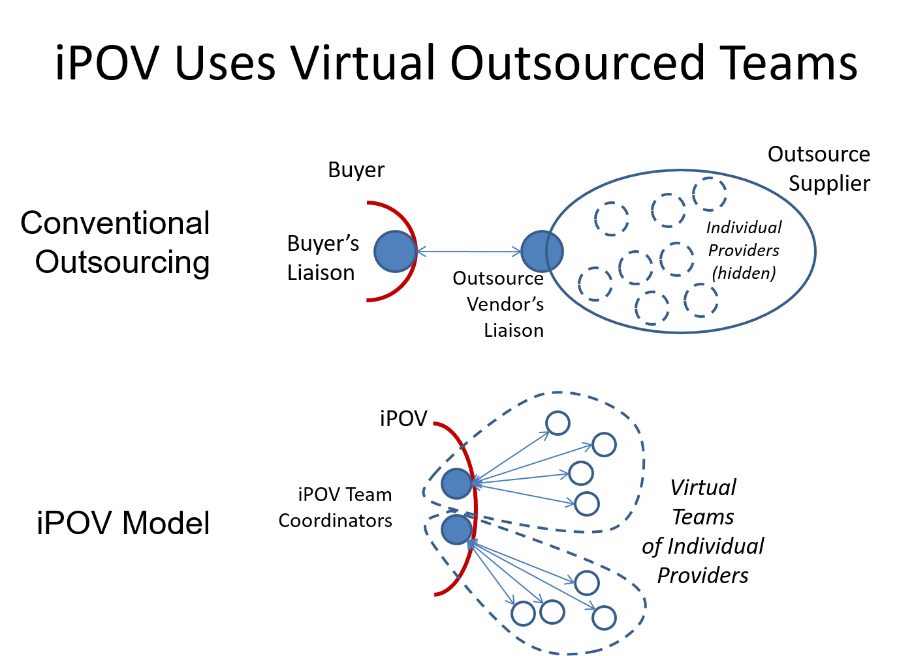
After iPOV closed up shop in Auburn, I engaged in a number of projects out of Atlanta. My new business model was to use teams of freelancers from all over the globe. If it sounds risky … it isn’t.
2013 New eLearning Production Workflow
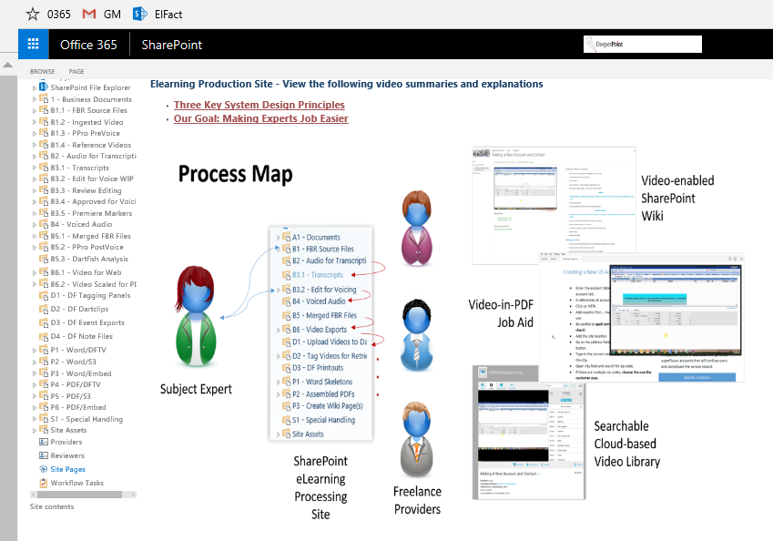
When I shut down the Auburn iPOV operation, I had to invent a new eLearning production process that would work with remote freelancers. To make the system more appealing to corporate clients, I set it up to use Adobe Creative Suite and Microsoft SharePoint. With the advances that have occurred in both sets of tools, it actually works pretty well.
2011 Surveillance of Operations (Dartfish)
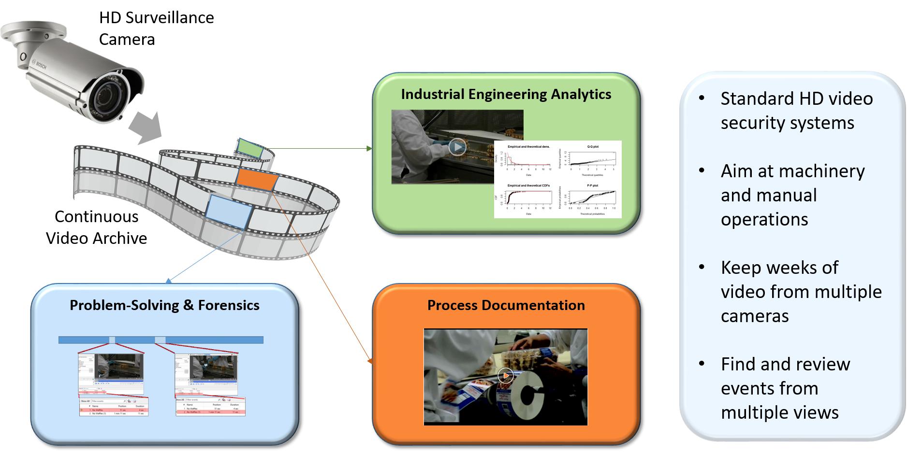
I worked with a sports video software company … Dartfish.com … to use video to observe and record business and factory operations.
2010 Explaining Material Master
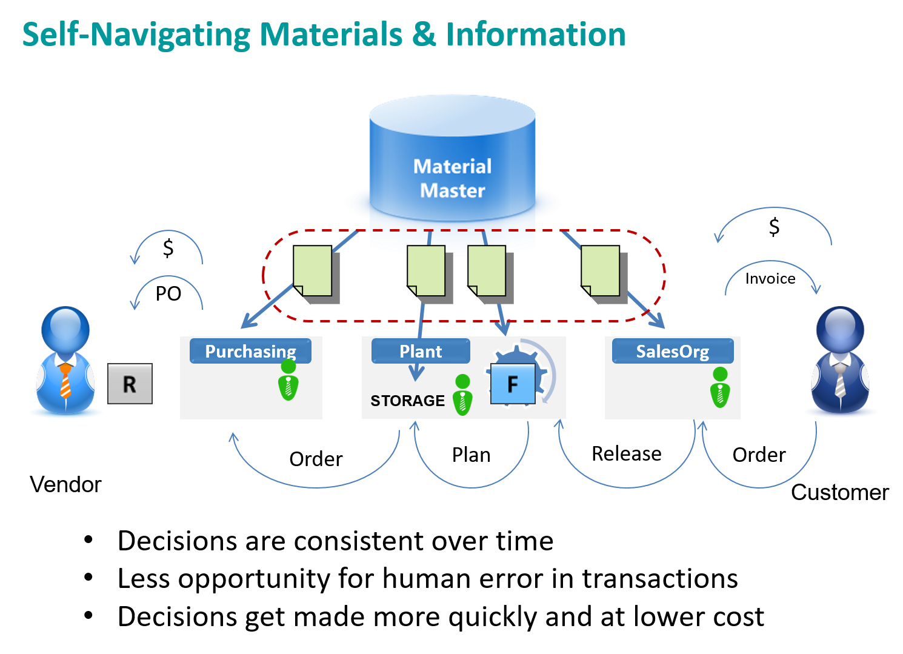
The idea of a “material master” is central to the design of every major class of transaction management software: CRM, ERP, WMS, Payables, etc. Like AC motors, however, it is usually perceived as a mystery that most employees don’t want to try to understand. iPOV came up with a pretty elegant, animated explanation.
2009 Amgen Interactive Video System
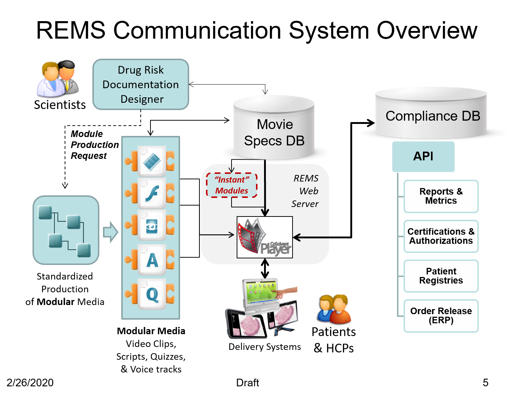
iPOV’s love affair with Flash hit a peak when we were asked to propose a system to Amgen. They didn’t buy it, but the design was awesome … and we had all the pieces already working. The system would have interactively edited video snippets into polished sequences, depending on the preferences indicated by the viewer. Instead of watching a long training video with a lot irrelevant parts, you would see just exactly what you needed to see.
2008 The Day the Orchestra Went Home
The financial crash hit our big corporate customers hard … and iPOV was all but wiped out. We survived for a while, but debts crippled us until my wife and I paid them off a decade later.
2008 iPOV Flash Video Player
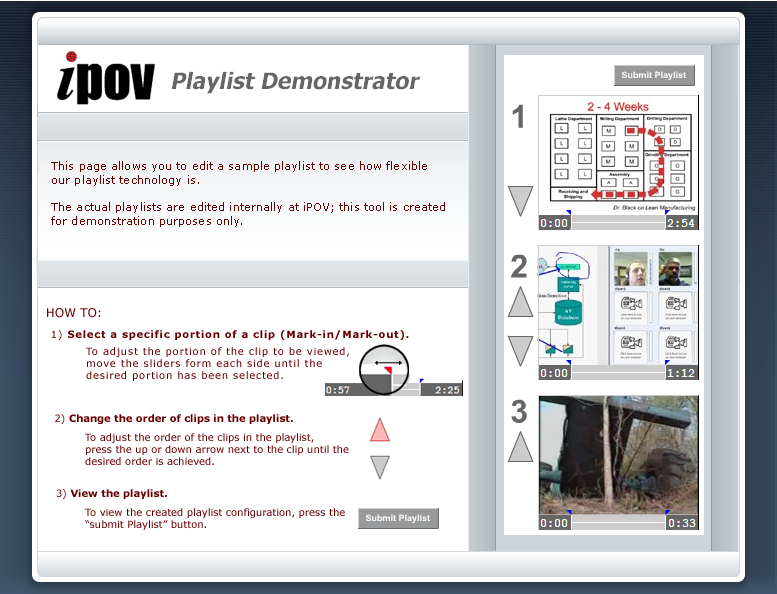
iPOV took Flash to its logical conclusion by creating a web video player that could be actively reprogrammed on the fly. We used it a lot ourselves, but we never really got traction trying to offer it to others. Poor marketing was a big part of that, but the growing resistance to Flash played a part. Eventually, we gave it away as open source.
2007 Video Speaks Every Language (Michelin)
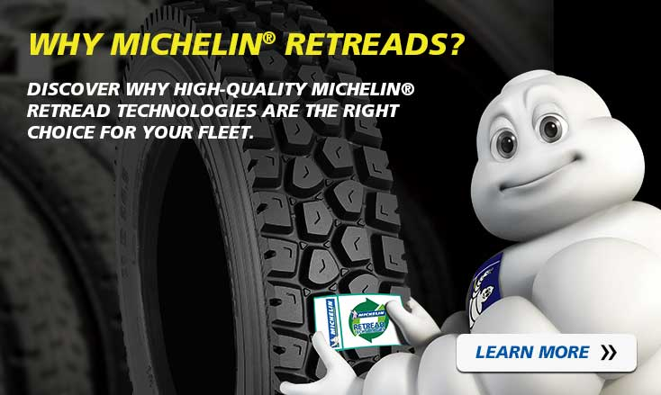
A Michelin subsidiary hired iPOV to build video courses on their operations. iPOV’s methodical process made it easy to construct the courses … then translate them into other languages. We produced companion versions in French (for Quebec) and Spanish.
2006 CoSolvent Video Gallery
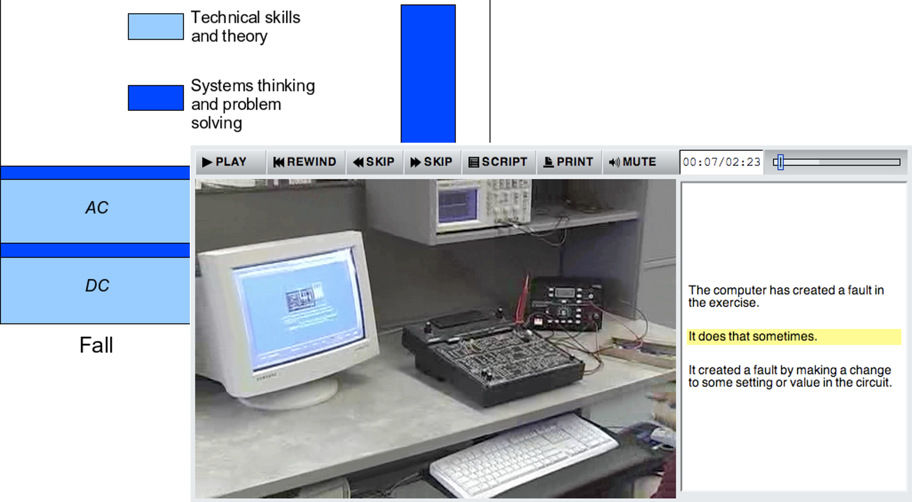
iPOV developed a “youtube clone” based on open source software. It was designed to make searching video much easier and faster … easier even than Youtube. It worked, and we used it extensively in our projects, but the death of Flash killed it too … even though we had switched everything to mp4, it was too late.
2004 Embedding Video in PDFs
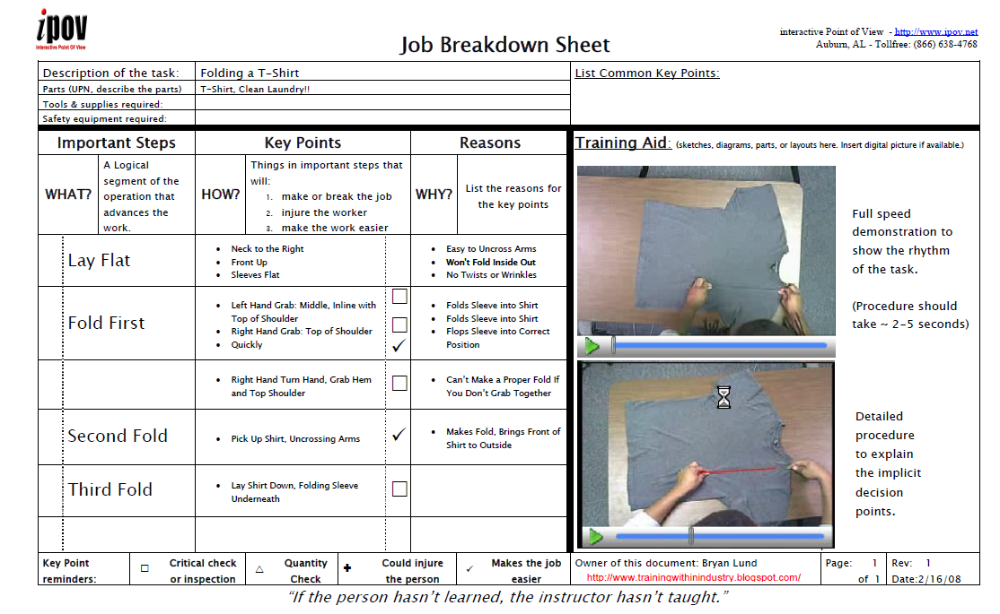
iPOV didn’t invent this … Adobe did. However, iPOV pushed the idea hard and developed some software tools to make it faster and easier to author PDFs that contained embedded video. Originally, we used Flash video. Later, we did the same thing with mp4.
2004 Framework of Technical Explanation
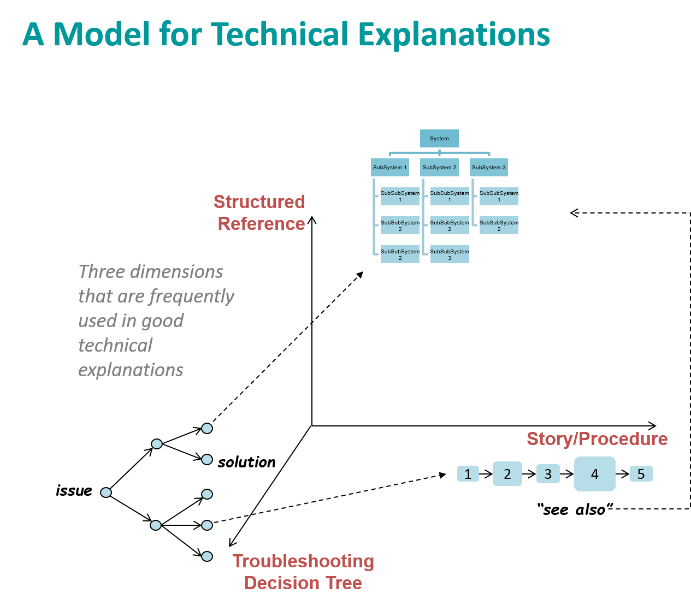
iPOV made so many technical manuals (about 500 projects all told) that we became very methodical about their structure. I crafted a 2 page model that guided the structure of almost all of our materials. It was very versatile and seldom let us down.
2002 eLearning Design Patterns
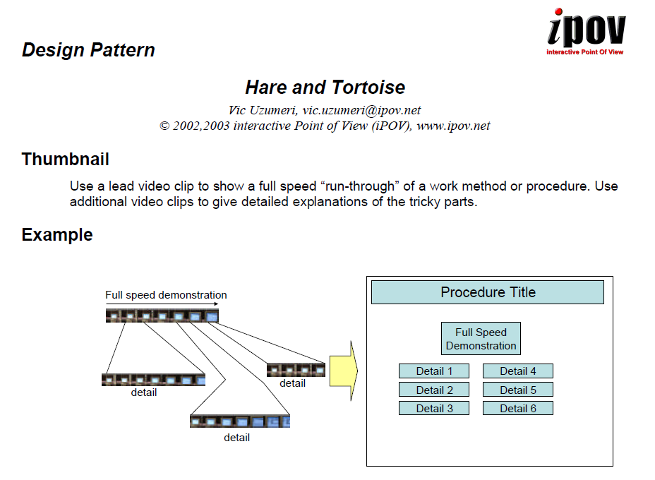
One of iPOV’s secret weapons was a system of simple design patterns for eLearning. They were not so much designed to look good … although they could. They were designed to make it easy and foolproof to build material that was clear and accurate. We never really got our clients to grasp that point, which is too bad, but it really helped us cut costs.
1999 iPOV Processing Workflow

iPOV developed a workflow for eLearning production that cut conventional development time and cost by at least 75%. It remained iPOV’s hallmark for nearly 20 years. I still use it today for my personal work.
1998 Employment “Farm Team”

For a decade iPOV relied on work by part-time Auburn students. They so consistently exceeded expectations that most ended up in great jobs after graduation. Many of them credited the opportunities and mentoring they received at iPOV. From this experience, I evangelized for the concept that universities could support an ecosystem of “farm team” companies for large employers. No one seemed interested, but I am still convinced it is an excellent and practical idea.
1997 Building eLearning Tech
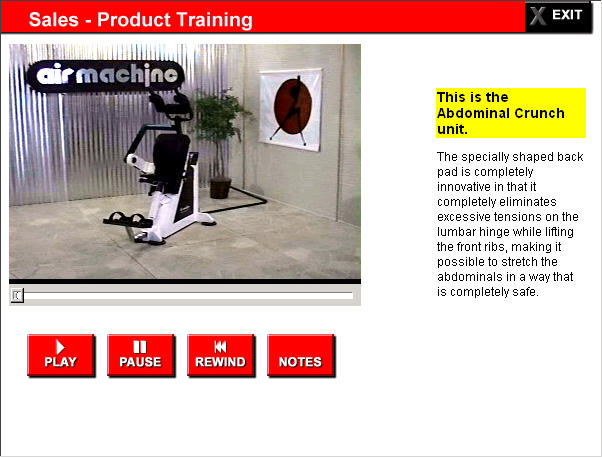
Over a 10 year period, iPOV developed a collection of cool web software tools for eLearning. Technologies included Flash ActionScript, XML, and video. Some of our best stuff used Flash to put dynamic, interactive layers over standard video. That wasn’t really replicated in web video for at least a decade.
1991–2012 Auburn University — College of Business
21 years teaching operations management and supply chain in the Management Department, later in Aviation Management & Supply Chain. The practitioner-teacher identity — and the daily frustration with how education systems waste teacher time — is the origin of much of my later work on education and marketplace design.
2015 Rethinking Higher Education

I was briefly drawn into the efforts of Morris Brown College to resurrect itself from oblivion. Their situation was dire, so I tried to think outside the box and find a teaching model that could work at much lower cost. Nothing came of it, but the exercise gave me some insights and ideas. My idea is to restructure Higher Ed so it stays true to its heritage, but uses new business tools to “manage” how they teach the traditional subjects.
2012 Teaching Outside to Inside
Even before we moved to Atlanta, I was fascinated with the idea of using mobile networks to teach. Universities had been teaching remotely for years and I taught for 6 years in Auburn’s Executive MBA. But on-campus students desperately need to see the reality of the outside world … and it is very hard to bring that back to campus. The occasional guest speaker doesn’t really cut it. By 2012, the technology pieces fell into the puzzle. I hopped around Atlanta with a laptop, a webcam and Verizon 4G. I delivered live lectures from the floor of a shipping dock, from a trade show floor, from the offices of Home Depot and Chick-fil-A logistics executives. Reality baby!
2010 Dimensions of Perception with Video

I worked for a while with an industrial engineering PhD student and, from that interaction and with iPOV on the side, I commissioned a series of graphics that summarized what humans can see versus what a video camera can see.
2010 A Deeper View (ADV) Tracking System
A Deeper View (ADV) was a web-based, cloud-hosted SaaS platform that captured real-time classroom observations of student performance. It was built on the principle of "one-touch technology" — observations recorded with a single button press in naturally occurring time gaps during class.
ADV was piloted in 300+ public and private schools before a patent lawsuit forced it off the market for four years. The core ideas — micro-observations, individualized rubrics, process measurement over output testing — live on in the EduOpsLab project.
2009 Black Widow Supply Chain Financing
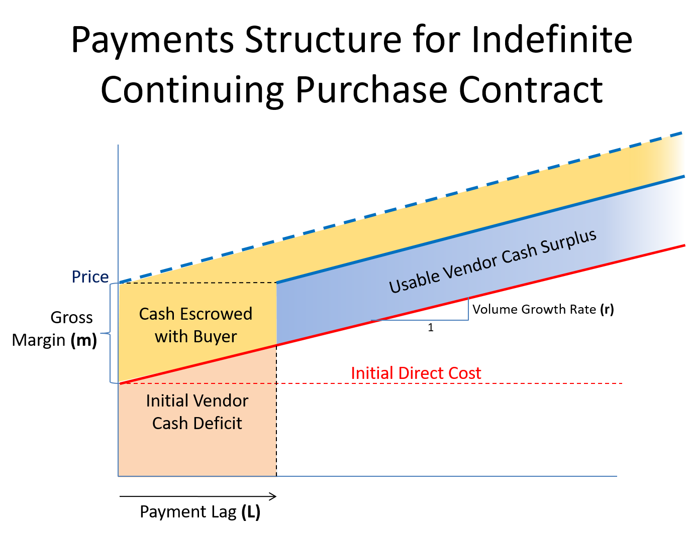
Since iPOV was always eagerly waiting for payments from big customers, I became interested in the implications of steadily lengthening payment terms. I ended up with a surprisingly simple model that largely upended all of the stuff we were teaching MBA students.
2007 Explaining AC Motors for Siemens
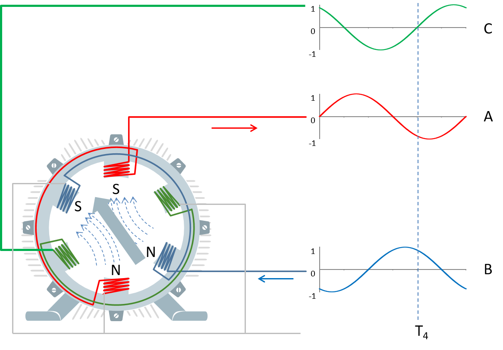
AC Motors are incredibly common and important. They are also amazingly simple and elegant, thanks to Nicola Tesla. However, it is no easy chore to explain them to non-engineers. I tried this for Siemens and I think I came pretty close to nailing it. This was the first project where I tried to use simplified visual models to explain a mysterious and obscure system.
2006 Space-Time Diagrams for Operations
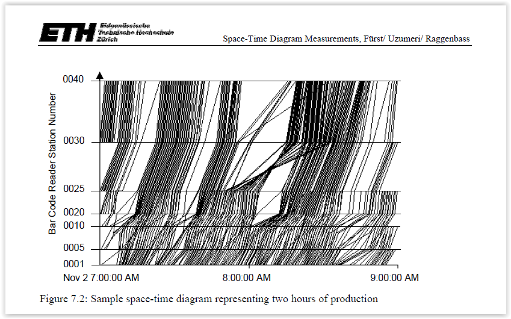
I had several German students visit Auburn to study with me. Alex, Steffi and Fabian. Not sure why I was chosen, but they were great kids and all went on to good things. Fabian took an interest of mine and developed it into a Master’s thesis that was very thorough and coherent. It sliced and diced the concept of space-time diagrams as they applied to production and similar operations.
2002 ISO 9001 Standardization

In the late 80’s manufacturing companies around the world faced demands to adopt a manufacturing quality standard: ISO-9001 … then endure audits to certify they conformed. I was fascinated because academic theory said that management practice cannot be standardized. Yet thousands and eventually millions of companies complied. Either management theorists were wrong or the standards writers were using smoke and mirrors. I spent 7 or 8 years digging into the phenomenon to try to resolve the contradiction. I think I succeeded because I wrote 4 or 5 journal articles that were accepted at good publications.
1999 Studying Learning AND Forgetting
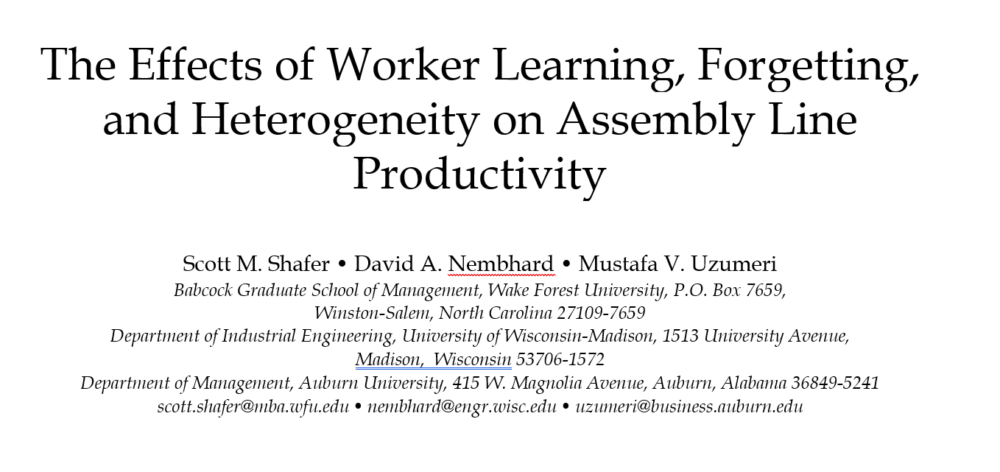
I collected large volumes of operator learning data at Chrysler. Two colleagues and I used that to build a model that accounted for patterns of learning, but also captured how performance was lost when a worker was moved away from the task.
1996 Chrysler IDS Video Training System

Chrysler’s Huntsville AL electronics plant spent nearly 2 years investigating and evaluating how to apply cutting edge video editing tools to the production of plant floor training materials. The original technology came from Quantel … a global broadcast video vendor. Although Chrysler ultimately declined to move forward, this project set me off on a 25 year quest to understand how video can be used in day-to-day business operations.
1996 Early Viral Internet Scandal (Intel Pentium)
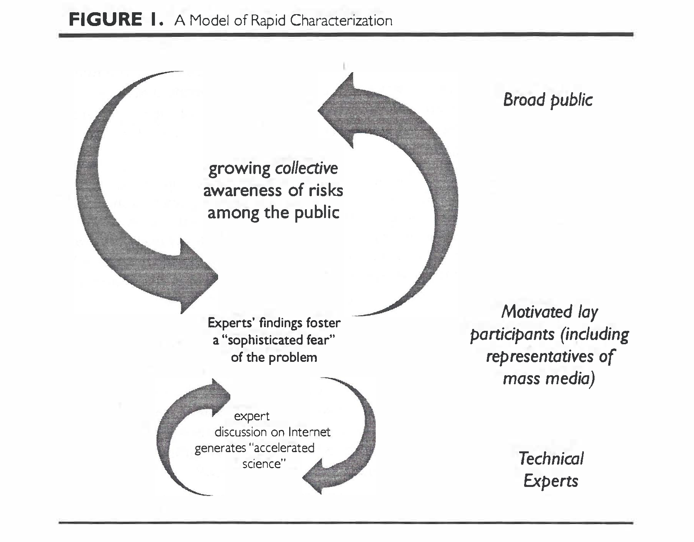
Intel made a mistake with its Pentium chip and a university researcher caught them out. The resulting furor ultimately forced Intel to recall existing chips at a cost of at least $250 million. I used usenet and Internet chat records to document the process. It was probably the first scholarly analysis of what is now called a “viral” Internet scandal.
1994 Population of Learners
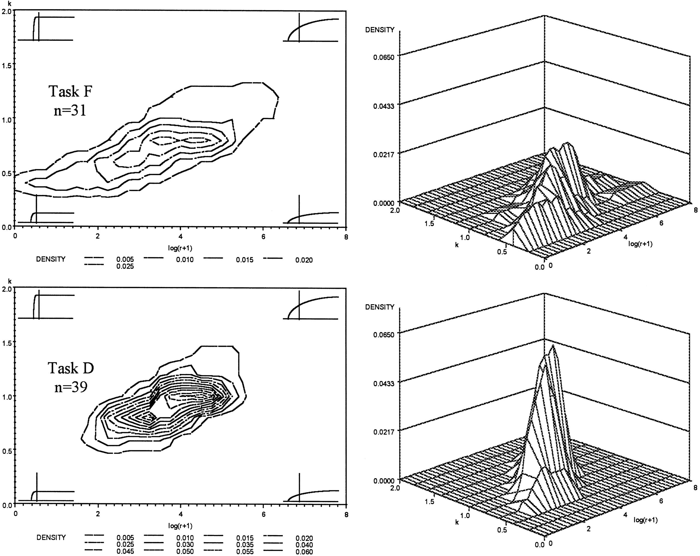
I was given access to corporate training data for an apparel manufacturer. There were records of thousands of employees who were learning how to sew t-shirts and similar garments. David Nemhard and I developed a model of learning that modelled individual behavior as a stepping stone to modelling group behavior.
1994 Management Control Systems
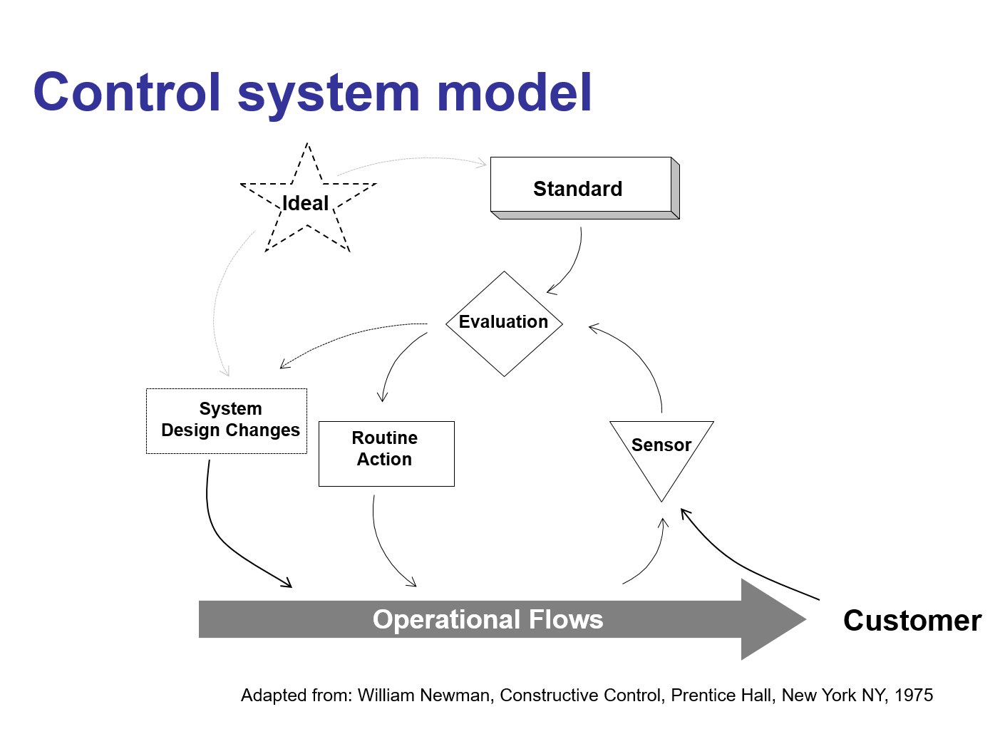
I began my fascination with the concept of management control and it has continued ever since. Academics don’t like to talk about “control”, but it is central to the management process and we need to understand it in all its forms.
1992 Analyzing Structure of Product Families
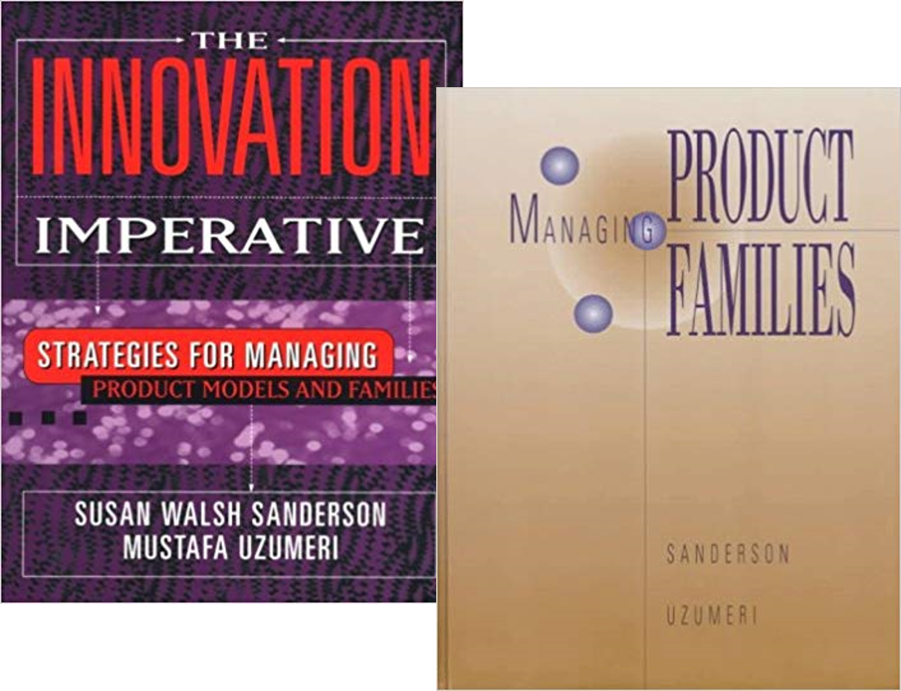
Susan Sanderson and I published a textbook (and a companion trade press clone). The textbook was adopted at University of Hong Kong, University of Singapore and MIT. I think we wrote it slightly above the mass market.
1990 Manufacturing Variety vs. Change (PhD)

This was my PhD dissertation. I examined how product families differed on the characteristic of product variety and serial design change. I found a pattern that was stable and logical that applied across essentially all of the discrete products industries … at least at that time.
1987 One of the Last Tours of the Internet
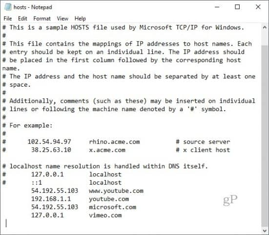
When I started my PhD in 1987, the Internet was still Arpanet. Every destination in the world was listed in a single text hosts file. I spent (wasted?) a couple of months hunting through every anonymous ftp site in that hosts file.
1985 Automating Wind Tunnels
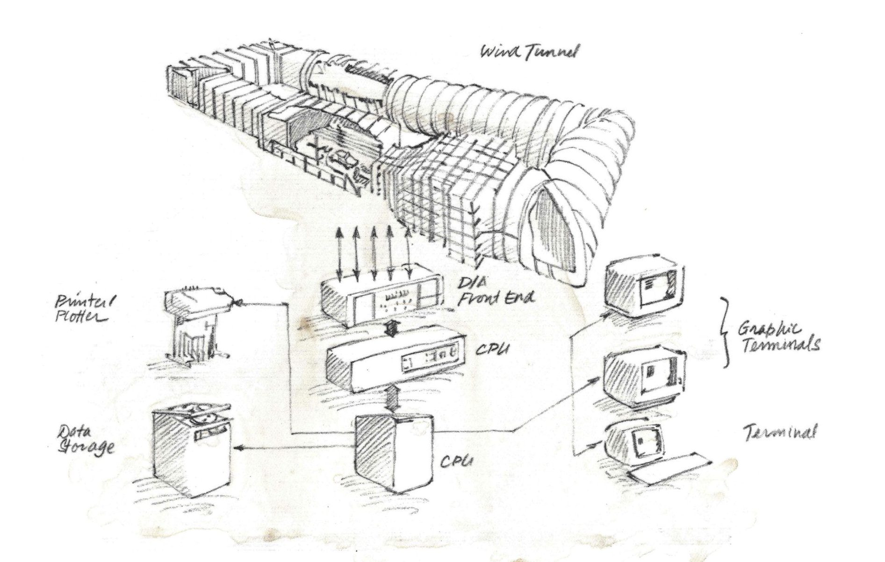
I was the liaison (i.e. shock absorber) between the management of an old-school engineering company and a group of crazy, but brilliant systems engineers. The geeks invented a system, “Talent” that was probably 5 to 10 years ahead of its time. It ran as a network of distributed physical and virtual machines … with real time performance that was absolutely insane. I did the business development (i.e., made sales calls and wrote the sales proposals) for the systems and the technology. They later formed a company (ReAct Technologies) that absorbed the founding firm … and is still the global go-to company for ultra-sophisticated research test automation systems.
1983 Selling Wind Tunnels
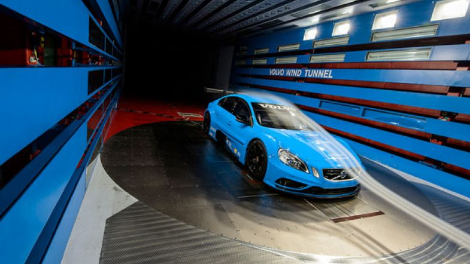
I worked in business development at one of the 3 companies in the world that you would call if you wanted a wind tunnel. I worked on contracts and project scheduling and writing proposals … lots of proposals. Some were even accepted.
1981 Railroad Capital Investment
I got a job in the Research Group at Canadian Pacific Railways (CP) in Montreal. It was a type of internal consulting group and we tackled whatever weird issue arose. My biggest task was to rewrite the manual for cost-justifying capital projects at CP. In the process, I was schooled by the old-bull line managers that my MBA knowledge didn’t quite cut it for investments that were expected to stand for 100 years or more.
1977 Subway Bid for Caracas
I worked for a year on the team that assembled a Canadian consortium bid to build the Caracas Metro. We lost the bid, but I did learn a lot of Spanish and traveled to Bogota and Caracas a number of times.
1976 Light Rail Operating Strategies
Ontario set up a company to build a Canadian light rail vehicle. I worked on the operating strategy for LRT lines. The company eventually moved to Kingston and was later bought by Bombardier as the basis for its light rail ventures over following decades.
1974 Modeling Travel Demand for Toronto
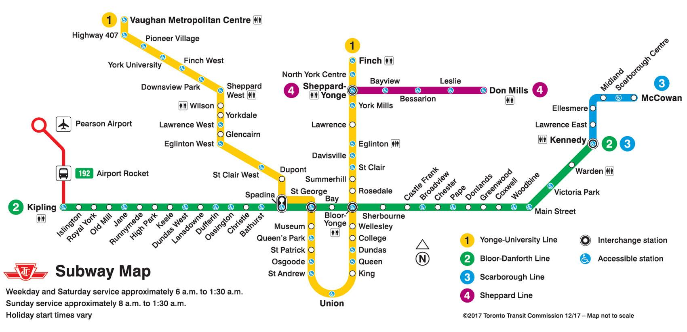
I converted manual travel demand analysis into Fortran computation for one of Canada's first holistic metropolitan transportation studies.